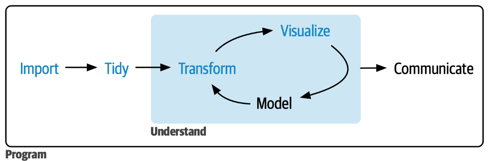
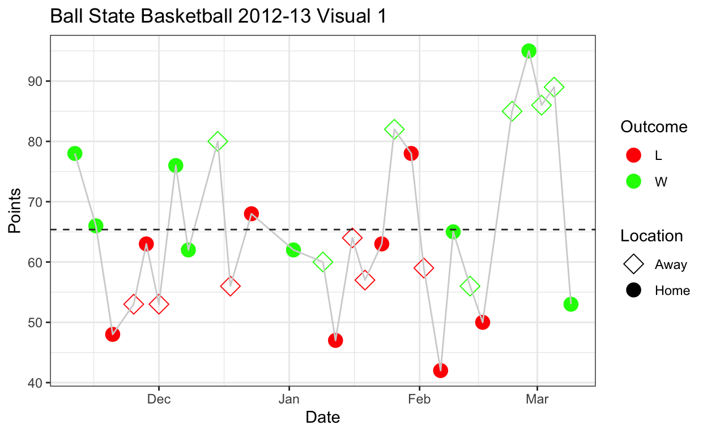
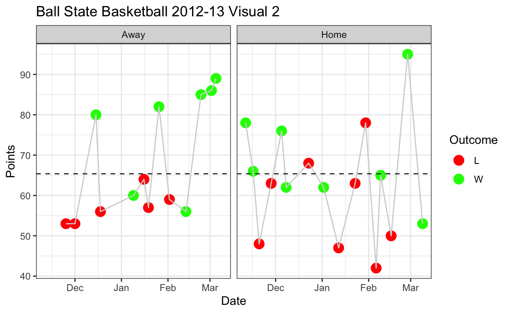
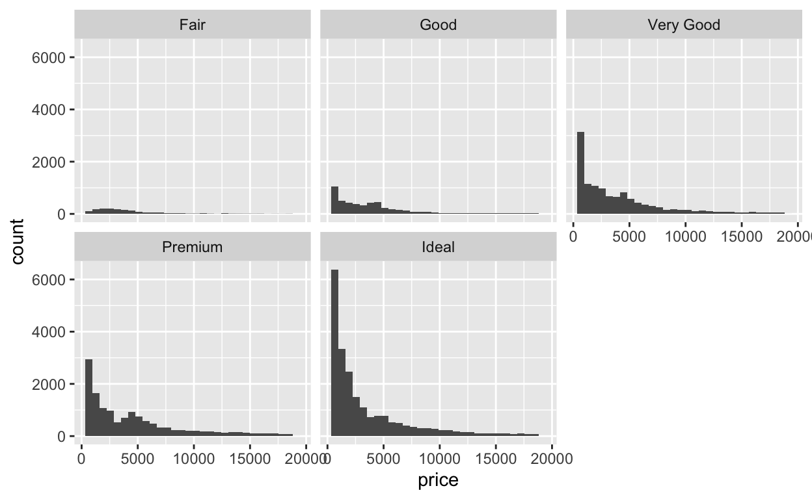
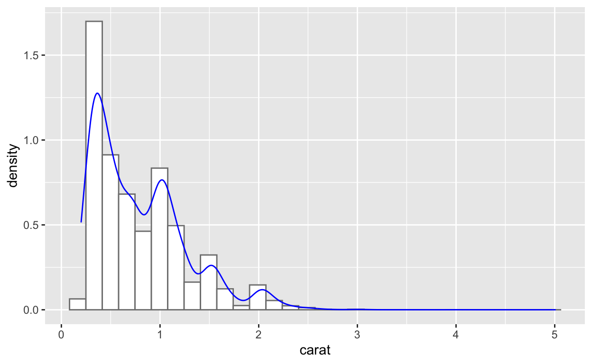

Overview
This section
- This section introduces the world of ggplot2, several different types of plots, and some basic features to enhance your visuals. Then it covers simple data visualization principles when working with multiple variables and how to implement these within ggplot2.

Readings
This section covers content from Chapter 2 - Data Visualization of R for Data Science (2e).
- Additional content includes section 10.4 - Facets and 10.5 - Statistical Transformations.
ggplot2 help documentation contains everything you need to know about ggplot2, including a very helpful cheatsheet.
Prerequisites
- Before we can use the functions, datasets, and help pages within the tidyverse, which includes ggplot2, we need to load the package. We can do this by running:
library(tidyverse)- Note if any package is not currently installed, it cannot be loaded. We can install packages using the ‘Packages’ tab or by running:
install.packages("tidyverse")Goal
- Our goal by the end of this section is to be able to understand all the aspects of the following plots, how to create them, and how to set up the plot to easily switch between different layouts.

Example dataset
We are going to use
diamondsdataset from ggplot2 package, akaggplot2::diamonds(this is the syntax for denoting which package a function or dataset comes frompackagename::functionname()). This contains price and other attribute information about a large sample of diamonds.You can search a function or dataset name in the ‘Help’ tab or run
?< function or dataset >to bring up the documentation.
?diamondsTo preview the dataset, we can click on it in the ‘Environment’ tab or run
glimpse(), which shows a better formatted preview than the standardprint()function.Displayed results compactly show the number of observations, the number of variables and their corresponding data types and also some of the raw data.
glimpse(diamonds)## Rows: 53,940
## Columns: 10
## $ carat <dbl> 0.23, 0.21, 0.23, 0.29, 0.31, 0.24, 0.24, 0.26, 0.22, 0.23, 0.…
## $ cut <ord> Ideal, Premium, Good, Premium, Good, Very Good, Very Good, Ver…
## $ color <ord> E, E, E, I, J, J, I, H, E, H, J, J, F, J, E, E, I, J, J, J, I,…
## $ clarity <ord> SI2, SI1, VS1, VS2, SI2, VVS2, VVS1, SI1, VS2, VS1, SI1, VS1, …
## $ depth <dbl> 61.5, 59.8, 56.9, 62.4, 63.3, 62.8, 62.3, 61.9, 65.1, 59.4, 64…
## $ table <dbl> 55, 61, 65, 58, 58, 57, 57, 55, 61, 61, 55, 56, 61, 54, 62, 58…
## $ price <int> 326, 326, 327, 334, 335, 336, 336, 337, 337, 338, 339, 340, 34…
## $ x <dbl> 3.95, 3.89, 4.05, 4.20, 4.34, 3.94, 3.95, 4.07, 3.87, 4.00, 4.…
## $ y <dbl> 3.98, 3.84, 4.07, 4.23, 4.35, 3.96, 3.98, 4.11, 3.78, 4.05, 4.…
## $ z <dbl> 2.43, 2.31, 2.31, 2.63, 2.75, 2.48, 2.47, 2.53, 2.49, 2.39, 2.…ggplot2 basics and scatterplots
Building from scratch
ggplot2 builds plots based on an approach called the grammar of graphics (hence “gg”plot2).
The grammar of graphics approach requires explicit aesthetic mapping of data to geometric features.
All plots follow a similar structure that builds up from the
ggplot()function, which creates a “blank canvas”.And the first thing we can do is specify the dataset we will be using and rerun the code.
- Now it is primed with the data, but we haven’t told it to do anything.
Aesthetic mapping
Next, we can add a layer of geometric features with
geom_*(). This uses uses aesthetic mapping, which takes values of a variable and translates them into a visual feature.Choice of geometry depends on the data types of the variables of interest from the supplied dataset as well as the intent for creating the plot.
In the example below, both variables (
caratandprice) are continuous. So we can use a scatterplot visualize their relationship. This is created by adding a layer of points viageom_point().Simply use
+between ggplot2 functions to add layers.
ggplot(data = diamonds)The code above throws an error because R can’t find
caratandpricebecause it is looking for standalone objects (i.e. vectors namedcaratandprice).So to tell R that the attributes are from the
diamondsdataset, use theaes()function. In other words, this function connects the plot features to the dataframe specified in thedataargument. Lets correct the above code.
ggplot(data = diamonds,
x = carat,
y = price) +
geom_point()Exercise
- Use the code chunk below to create a scatterplot for
tablevsdepth.
ggplot(data = diamonds,
aes(x = table,
y = depth)) +
geom_point()Other attributes
- Now we can adapt the scatterplot from above to learn more about
function structure. Lets try to change the color of the points. A
reasonable first attempt would be to specify a
colorargument.
ggplot(data = diamonds,
aes(x = carat,
y = price)) +
geom_point()This does not work as hoped. Because we specified within the
aes()function,ggplot()looks for the columnpurplein the dataset.So when it doesn’t find one, a new column purple is made and assigned this same value to every observation. And because this new column is being mapped to the color of the dots,
ggplot()colors accordingly (although it’s not what we wanted).The solution to change the color of all data points is to relocate the
colorargument.Anything that is a simple “constant” value (i.e. not part of the data and just an option for visual look) should be specified locally and outside of the
aes()function.So lets correct it.
ggplot(data = diamonds,
aes(x = carat,
y = price,
color = "purple")) +
geom_point()Incorporating more variables via aes()
Only data-driven attributes go inside the
aes()function.To see how this works, let’s take a look at the iris dataset.
glimpse(iris)## Rows: 150
## Columns: 5
## $ Sepal.Length <dbl> 5.1, 4.9, 4.7, 4.6, 5.0, 5.4, 4.6, 5.0, 4.4, 4.9, 5.4, 4.…
## $ Sepal.Width <dbl> 3.5, 3.0, 3.2, 3.1, 3.6, 3.9, 3.4, 3.4, 2.9, 3.1, 3.7, 3.…
## $ Petal.Length <dbl> 1.4, 1.4, 1.3, 1.5, 1.4, 1.7, 1.4, 1.5, 1.4, 1.5, 1.5, 1.…
## $ Petal.Width <dbl> 0.2, 0.2, 0.2, 0.2, 0.2, 0.4, 0.3, 0.2, 0.2, 0.1, 0.2, 0.…
## $ Species <fct> setosa, setosa, setosa, setosa, setosa, setosa, setosa, s…For this example, we want to create a scatterplot for
Sepal.LengthvsSepal.Widthand color each observation based onSpecies, while also changing the style of dot for every point.Note that color is a data-driven feature, and size / shape are simply constants.
ggplot(data = iris,
aes(x = Sepal.Length,
y = Sepal.Width))Exercise
Using the code chunk below, create a scatterplot using a sample of the
diamondsdataset that includes the following features (code for the sample is provided, check the help page to see how it works!):Visualizes
tablevsdepth;Each observation is sized based on the weight
carat;All observations have the shape of a diamond.
HINT: Google “geom_point() shapes”.
diamonds_sample <- sample_n(diamonds, size = 100)ggplot(data = diamonds_sample,
aes(x = table,
y = depth,
size = carat)) +
geom_point(shape = 5)- Now lets take a look at some different types of plots and more options to spruce them up.
Histograms
geom_histogram()
A basic histogram is a univariate plot that can be used for continuous variables and is created via
geom_histogram().Below we will code an example that shows the required mapping (i.e. arguments needed within the
aes()function along with some other relevant arguments forgeom_histogram().Search the help page for each
geom_*to see which aesthetics are required and what else can be modified.
ggplot(data = diamonds)Now let’s use the iris data to make another histogram, except we are going to incorporate another variable; specifically we want to visualize on the petal lengths based on which species they are.
Note that to map species to the color of the bars, the
fillargument should be used (using thecolorattribute only changes the outline color of the bars).
ggplot(data = iris,
aes(x = Petal.Length)) +
geom_histogram()Exercise
- Use the code chunk below to create a histogram for
caratthat has 20 bins with white bars and black outlines.
ggplot(data = diamonds,
aes(x = carat)) +
geom_histogram(bins = 20,
fill = "white",
color = "black")Titles and labels
- We can use of the
labs()function which adds main titles, axis titles, etc. These labels can be tacked onto any ggplot2 plot. Let’s try it below.
ggplot(data = diamonds,
aes(x = carat)) +
geom_histogram(binwidth = 0.1,
fill = "red",
color = "purple")Exercise
Using the code chunk below, modify the code used to make the previous plot to:
Visualize sepal length instead of petal length;
Change the X-axis label to be more readable;
Give the plot an informative title.
ggplot(data = iris,
aes(x = Sepal.Length,
fill = Species)) +
geom_histogram() +
labs(title = "Sepal Length by Species",
x = "Sepal Length (cm)")Boxplots
geom_boxplot()
Boxplots are another common plot, which are used to visualize the distribution of a numeric variable. However, they no longer map the raw data.
Instead,
geom_boxplot()maps the five number summary that is computed from the raw data.
x <- rnorm(50)
summary(x)This is an example of when an aesthetic has an implicit transformation, which is then used to build the plot rather than straight from the raw data.
geom_boxplot()requires a continuous variable to be mapped to either thexoryargument, depending on the desired orientation of the boxplot.
ggplot(data = diamonds)Exercise
- Using the code chunk below, create a vertical boxplot of
Sepal.Lengthusing the iris dataset.
ggplot(data = iris,
aes(y = Sepal.Length)) +
geom_boxplot()Comparitive boxplots
- We can also make comparative (side-by-side) boxplots by mapping a categorical variable to the other axis. Lets see how to this works.
ggplot(data = diamonds,
aes(x = carat)) +
geom_boxplot()This results in boxplots based on a single continuous variable, but grouped by the levels of the categorical variable. This is one way to plot a numerical response with a categorical explanatory variable.
An advantage of this is that they are easier for comparing centers (medians) and spread (IQR), and can also highlights outliers. However with big data, it will often show many outliers that aren’t actually outliers (because the spread gets smaller and smaller as \(n\) increases).
Transformations and more customizations
We can do transformations of the input variables directly within the
ggplot()call, without having to modify the data object itself.Just like the other geoms, we can modify some visual aspects of the layer.
Then if we want to swap the axes, we can use
coord_flip(); this is one of many functions that can be used for further customization of most ggplots (others includescale_*(),theme_*(), etc.).
ggplot(data = diamonds,
aes(x = cut,
y = price)) +
geom_boxplot(fill = "darkblue",
color = "lightblue")Exercise
Using the code chunk below, create a comparative boxplot using the iris dataset that includes the following features:
Compares
Sepal.Lengthfor eachSpecies;Horizontal boxplots (more than one way to do this);
Sepal.Lengthis originally measured in millimeters (mm); convert this to meters (m) for this plot;More informative axis label for
Sepal.Lengthbased on new scale;A cool theme (try a few!).
# NOTE: if have X and Y aesthetics swapped, can use coord_flip() to get horizontal boxplots without changing your aes() statement
ggplot(data = iris,
aes(x = Species,
y = Sepal.Length / 10)) +
geom_boxplot() +
labs(y = "Sepal Length (m)") +
theme_light()Bar graphs
Bar graphs
A bar graph (also known as bar chart or bar plot) is used for categorical data and assigns a height of a bar to the count of a group.
Comparisons are made easier with visuals than just numbers (although keep in mind that sometimes simpler is better and a table suffices).
Just like a boxplot, a bar graph is not plotting the raw data itself. Rather it uses a summary of the data, specifically the frequency (or relative frequency = frequency / total)
There are two ways we can use
geom_bar()to make our bar graph, and it depends on the structure of the data.
geom_bar() wtih raw data
One way to make a bar graph is to just use the raw data and let
geom_bar()convert the data into counts behind the scenes, as shown below.Lets take a look at the data before plotting.
- By “raw data”, we mean there is one row for each observation. When
this is the case, we don’t have to change any options in
geom_bar().
ggplot(data = diamonds,
aes(x = cut))geom_bar() wtih count data
Another way is to manually create the counts dataframe (aka frequency table) and make the bar graph from this summarized data.
There are multiple ways to calculate the frequencies of each group in a dataframe. Two ways are shown below, using Base R
table()and the other using a tidyverse functiondplyr::count().
table(cut = diamonds$cut)
cut_table <- count(diamonds, cut)
glimpse(cut_table)Now we have the frequency table, we can go into plotting it. But it will be different than how we used
geom_bar()last time because we are giving it already summarized data.Specifically we have the group label (our
x) and the now specified count (height,y); so, we need to tellgeom_bar()to not do any statistical transformation on these variables (i.e. don’t count again). To do this, we use the optionstat = "identity".
ggplot(data = cut_table,
aes(x = cut)) +
geom_bar()- Just like with most things, there is still another way to do this:
geom_col()treats theyaesthetic as heights directly and we don’t have to specify anything else.
ggplot(data = cut_table,
aes(x = cut,
y = n))Exercise
- Using the code chunk below, create a bar graph of
Speciesusing a sample from the iris dataset provided below.
HINT: Make sure to inspect the data first.
iris_sample# preview dataset to figure out structure
glimpse(iris_sample) #-> count (summarized) data
# create bar graph
# -> way 1)
ggplot(data = iris_sample,
aes(x = Species,
y = Count)) +
geom_bar(stat = "identity")
# -> way 2)
ggplot(data = iris_sample,
aes(x = Species,
y = Count)) +
geom_col()Displays for bivariate categorical data
Stacked bar graph
A common extension of a barplot is to show the breakdown of a second categorical variable within each bar. One way to do this is with a stacked bar graph.
We can again use
geom_bar()(and let it do the counting). In order to differentiate between the two variables, we can specifyfillin theaes(), just like we did withgeom_histogram().
ggplot(data = diamonds,
aes(x = cut)) +
geom_bar()- Notice that the y-axis on the plot is count, so all of the bars and segments are based on the frequency.
Proportionally stacked bar graph
- If we want the plot to be more standardized-ish, we can make a
proportionally stacked bar graph by specifying
position = "fill". This makes each bar have the same height and the segments corresponding to the second variable are broken out by percentage within each individual bar.
ggplot(data = diamonds,
aes(x = cut,
fill = clarity)) +
geom_bar()This makes across group comparisons valid and easier because segments are no longer based on potentially very different sample sizes (technically, we are plotting the conditional distributions of clarity for each type of cut).
The advantage of this display is that we can see if there are differences in the distributions of clarity across each cut (regardless of how many total diamonds belong to each cut).
Side-by-side bar graph
- We can also incorporate the second variable by having side-by-side
bars rather than stacked. To do this, we just have to set
position = "dodge".
ggplot(data = diamonds,
aes(x = cut,
fill = clarity)) +
geom_bar(position = "fill")- This display may tell a better story if it is important to keep an idea of sample size for each group combination. We can still tell that there are the most “Ideal” cut diamonds.
Exercise
- Using the code chunk below, create a few different displays using
the
diamondsdataset that visualizecutandcolortogether. Can you notice any trends or lack-thereof between the two variables? Explain.
# two of several plots that could be made
# side-by-side bar graphs
ggplot(data = diamonds,
aes(x = color,
fill = cut)) +
geom_bar(position = "dodge")
# proportionally stacked bar graph
ggplot(data = diamonds,
aes(x = cut,
fill = color)) +
geom_bar(position = "fill")
# trends
# -> colors E, F, amd G are the three most common
# -> distributions of color are relatively the same across cuts (i.e. about same proportion of diamonds for each color regardless of cut)Line plots
geom_line()
Another type of plot is a line plot. These are most commonly used when looking at a quantitative variable across time periods (aka time series data).
Below is a look at the example data
sunspot.year. As usual we should get familiar with the data first.
glimpse(sunspot.year)## Time-Series [1:289] from 1700 to 1988: 5 11 16 23 36 58 29 20 10 8 ...- Before plotting, we need to turn this into a dataframe and add a column indicating the year.
data_sun <- data.frame(year = c(1700:1988),
sunspots = as.vector(sunspot.year))
glimpse(data_sun)## Rows: 289
## Columns: 2
## $ year <int> 1700, 1701, 1702, 1703, 1704, 1705, 1706, 1707, 1708, 1709, 1…
## $ sunspots <dbl> 5, 11, 16, 23, 36, 58, 29, 20, 10, 8, 3, 0, 0, 2, 11, 27, 47,…- This is an easy plot to make, just use
geom_line()and specify thex, which is usually time, andywithin theaes().
ggplot(data = data_sun)Facets
Facets
Facets (think subplots) are a data-driven feature that can be used to compare distributions based on the levels of other variables.
Visually, this is done by splitting plots into different panels rather than one overall panel. There are multiple ways this can be done within ggplot2.
facet_wrap()
If we are facetting by one categorical variable, we want to use
facet_wrap(~ var).Note: the tilde
~is used to make formula in R.Let’s create a scatterplot and add facets for
cutto demonstrate this.
ggplot(data = diamonds,
aes(x = table,
y = depth)) +
geom_point()- We see that
facet_wrap()“wraps” the panels for a single factor rectangularly, which is ideal when there are many levels for the factor.
Controlling rows and columns
- If we want to control how the panels are wrapped because we are
trying to highlight some aspect, we can specify how many rows or columns
of panels using the options
nrowandncol.
ggplot(data = diamonds,
aes(x = carat)) +
geom_boxplot() +
facet_wrap(~ cut)- Just be careful of overplotting, don’t want too many panels stacked together.
ggplot(data = diamonds,
aes(x = price)) +
geom_histogram() +
facet_wrap(~ clarity,
nrow = 1)Scales for facets
- By default, all the panels will have the same scale for the numeric variable. This can distort some plots as shown below.
ggplot(data = diamonds,
aes(x = price)) +
geom_histogram() +
facet_wrap(~ cut)## `stat_bin()` using `bins = 30`. Pick better value with `binwidth`.
To make the plots more readable, we can add an option to allow panels to have scales (min, max, tick marks, etc.) based on only the data in the respective panel, rather than the collective data.
This is done via the
scalesargument; options are"free_x","free_y"or"free"(both \(x\) and \(y\) scales are free).Now we can correct the above plot.
ggplot(data = diamonds,
aes(x = price)) +
geom_histogram() +
facet_wrap(~ cut)- This is another way to display numerical distributions for multiple groups. The advantage of creating multiple histograms is that they can show prevalence (i.e. frequencies) and modality of the distributions, whereas boxplots cannot.
Exercise
Using the code chunk below, create a boxplots using the iris dataset that includes the following features:
Plots
Sepal.Lengthfaceted bySpecies;Stack the facets vertically to emphasize the differences between each Species;
Think about if we want to adjust the scales of the panel, why or why not?
Note that we made this plot previously with comparitive boxplots by specifying
aes(y = Species); so this is an alternative.
ggplot(data = iris,
aes(x = Sepal.Length)) +
geom_boxplot() +
facet_wrap(~ Species,
ncol = 1)
# we do NOT want to use scales = "free_x" because in order to have an equal comparison of the boxplots across species, we need them to be on the same scalefacet_grid()
If we want to facet by two categorical variables, we should use
facet_grid(var1 ~ var 2)as it can make a matrix of panels.Note that
var1(before~) represents the rows andvar2(after) is the columns.Lets create boxplots for each combination of
cutandcolorfor thediamondsdataset.
ggplot(data = diamonds,
aes(x = table)) +
geom_boxplot()- Note that when using
facet_grid(), we may need to fix the scales in the same way as withfacet_wrap(). And just because we can make the plot means that it is good…
Exercise
- Using the code chunk below, create scatterplots of
caratvspricethat is colored bycutand facetted bycolorandclarity. Try a few different options forscalesto see how they affect the plot.
diamonds_sampleggplot(data = diamonds_sample,
aes(x = carat,
y = price,
color = cut)) +
geom_point() +
facet_grid(color ~ clarity,
scales = "free") # both X and Y axes to be free (for the grid, not each individual panel)Density histograms and density curves
Density histograms
As we saw in the previous topic, if comparing a numeric distribution for a categorical explanatory variable, multiple histograms are a good option. But we had to allow varying scales between panels in order to have a readable plot.
Another option if we are not concerned with counts (sample size), but rather shape and modality across groups, is to make the heights of bars proportional.
We can think of this as each histogram having the same amount of “ink”, whcih is done by adding the condition that total heights must sum to 1. In essence, this standardizes heights.
To do this, we map
y = after_stat(density)in theaes()statement (we won’t dig into how this works).
ggplot(data = diamonds,
aes(x = carat)) +
geom_histogram() +
facet_wrap(~ cut,
scales = "free_y")- This can of course be done for a single histogram too.
Density curves
A density curve is related to the density histograms we just showed.
As we have seen, (density) histograms are really choppy binned representations of data whose display can vary widely based on our selection of bin width / number of bins.
ggplot(data = diamonds,
aes(x = carat,
y = after_stat(density))) +
geom_histogram(bins = 10)A more objective way to represent the data is called a density curve, which is a smooth curve based off the observed data that has an area under the curve (AUC) of 1.
We can think of this smooth curve as a blanket thrown over the top of our density histogram as shown below.
## `stat_bin()` using `bins = 30`. Pick better value with `binwidth`.
Notice how the density curve still reflects the overall pattern of histograms, but it is much smoother.
To create this by itself, use
geom_density().
ggplot(data = diamonds,
aes(x = carat))Exercise
Using the code chunk below, use the iris dataset to do the following:
Create a density histogram of
Petal.Length;Overlay a density curve of
Petal.Length.
HINT: You can plot multiple geoms on the same plot simply by adding another layer.
ggplot(data = iris,
aes(x = Petal.Length,
y = after_stat(density))) +
geom_histogram() +
geom_density()Multiple density curves
Density curves provide us with yet another way to visualize a quantitative distribution by group.
Drawing multiple lines (density curves) on the same plot is often better than many histograms, because the histograms would have to be stacked.
To distinguish between different groups when working with lines, we could use the aesthetics
linetypeorcolor(color will likely be easier to read, especially for several groups).We can also add some other options to make the lines stand out more.
ggplot(data = diamonds,
aes(x = carat)) +
geom_density()- Just be careful to not let the plot to get jumbled / messy with too many lines.
Amount of smoothing
One way to tweak the resulting curve is to change the amount of smoothing, which is a statistical parameter (not just a visual one like binwidth). To do this, use the
adjustparameter.If adjustment is larger (e.g.
adjust = 2), then the probability is more spread out and there is less smoothing; if smaller (e.gadjust = 0.2), then the smoothing is more sensitive and picks up on smaller patterns / spikes in the data.
ggplot(data = diamonds,
aes(x = carat)) +
geom_density()Exercise
Using the code chunk below, use the iris dataset to do the following:
Create density curves of a
Petal.Lengthcolored by eachSpecies;Adjust the amount of smoothing to find a level that shows the overall trends well with some detail, but that is not overly exact (it’s a balance);
Add
fill = Speciesin theaes()statement to see the result of this;Notice how the colors are completely opaque (not “see through”). To make them more transparent, add the following option locally
geom_density(alpha = 0.5). Try a few different values (0 \le alpha \le 1) to see the result. Note that this option can also be used with lots othergeom_*()as well.What does this plot tell us about the petal lengths of the different species?
ggplot(data = iris,
aes(x = Petal.Length,
color = Species,
fill = Species)) +
geom_density(adjust = 1,
alpha = 0.5)
# two of the species have similar petal lengths, while one is well below the othersApplication
Recreating
- Now we will return to the plots in the beginning of this section and recreate them.
data_bsu_plotExercise
- Using the code chuck below, copy the final code used to create `Visual 1’ from above and modify it to recreate ‘Visual 2’.
data_bsu_plot